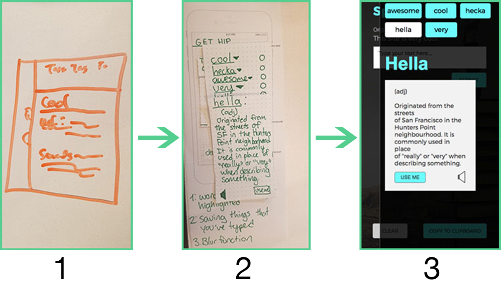

Spitfyre
Won first place in the General Assembly hackathon, this responsive site allows to look up slang and find out how to use new words in everyday sentences.
Check it out!
The Challenge
This hackathon project had a 24 hour turnaround and required a project that used an API and made someone's life better. My team consisted of two developers and two designers.
Team:
Rohini Mohandoss | Ryne Schillinger | Donnie Ellstrom | Emily Rowley
Duration:
24 hours.
Roles:
User Experience Designer, Researcher, Interaction Designer
Tools
Sketch, paper prototyping, whiteboarding
Research
Our group got together and immediately started to brainstorm based on available APIs, which was the one requirement for the developers. We tossed a few ideas back and forth before Ryne found the Urban Dictionary API. The UX designers immediately started grilling the devs about what was possible to do. We found the idea of being able to replace common, proper words with their slang counterparts in everyday conversation to be hilarious, and the ability to look up slang to be useful. After talking about a few features that turned into stretch goals, the devs confirmed that it would be possible to build an MVP in this amount of time.
The devs started to get the back-end and basic framework up, and my fellow UX designer and I started to really get into who our user was and what their context would be. My partner, Rohini, recently moved here from India and that gave me the idea that the person who might use this would be someone who didn’t know American English that well. We came up with a persona hypothesis, Latha, and user flow centered around that idea.
Design
 Based on the needs of our persona hypothesis, I decided that we should design mobile first. I wanted the site to be clean and easy to use, with the definition and additional information grabbed from the API to be stored in a modal.
The modal was a really interesting part of the process.
1 I sketched with the developers to show what I wanted the modal to do.
2 Then I made a paper prototype to show them how I wanted it to animate.
3 Then a mockup in Sketch to show the developers how I wanted the styling to look.
The developers really enjoyed interacting with the paper prototype and found it to be a really useful tool to understand what I wanted it to do. Being able to quickly make iterations was also very useful.
The Result
Our design won first place in the General Assembly February Hackathon. Our group learned a lot from working together and we're working on V2 of Spitfyre now. Visit the finished product here.
I learned the importance of knowing enough about front-end development to accurately convey an idea to a developer. I learned which tools were useful (paper prototype) and which tools were not (using vague words and hand gestures). Teamwork with people from multiple disciplines can be difficult when you aren't quite sure what everyone does. Having the developers explain what they were doing in layman's terms and then the correct terminology really helped me learn more about the front-end process. From this project, I feel more confident in future cross-disciple collaborations.